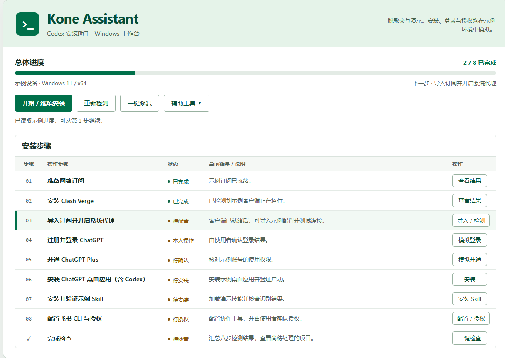

我是麦芒。我关注门店里的具体问题，比如工具怎么装、杯盖怎么拿、新任务怎么交接。这里记录了我为这些问题做过的产品设计。

在八步安装工作台中查看进度、逐项操作，或诊断并修复连接故障。
围绕杯子、杯盖与吸管的取用，把吧台收纳拆成可组合的独立模块。
我习惯先看人怎么完成一件事，再决定该改流程、做工具，还是调整一个物件的形状。
沿着使用者的操作顺序整理任务，找到交接、等待和容易出错的环节。
安装助手保留逐项操作、按当前进度继续与连接故障修复三条体验路径。
在杯架设计中，将杯子、杯盖和吸管分开收纳，再回到吧台观察模块组合与取用方向。